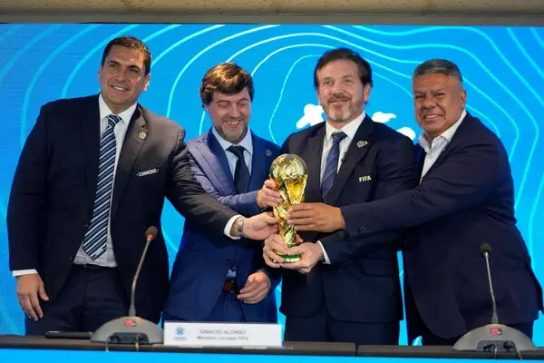

FIFA Will Host 2030 World Cup on Three Continents
Soccer’s biggest event will celebrate its centenary by placing games in South America, Europe and Africa. The decision could pave the way for Saudi Arabia to host in 2034.
Soccer’s World Cup will be staged in six countries on three continents in its centenary edition in 2030, an unexpected and complex alteration to its traditional format that was approved on Wednesday in a meeting of FIFA’s governing council. In the unusual arrangement, three South American countries — Argentina, Paraguay and Uruguay — each will host a single opening match on home soil and then join the rest of the field for the remainder of the tournament, which will take place in Spain, Portugal and Morocco. The six countries had initially joined forces regionally in separate bids for the hosting rights to the 100th anniversary World Cup, a globe-stopping, monthlong soccer festival that produces billions of dollars in revenue for FIFA every four years. The offer from the South American nations had long been considered an outsider, however, to the three-nation bid from Spain, Portugal and Morocco, which was officially declared the sole bidder for 2030 on Wednesday. But under the new arrangement to recognize the tournament’s centenary, each nation will get to take a turn as a host. “In 2030, the FIFA World Cup will unite three continents and six countries, inviting the entire world to join in the celebration of the beautiful game, the centenary and the FIFA World Cup itself,” FIFA said in a statement after the meeting.